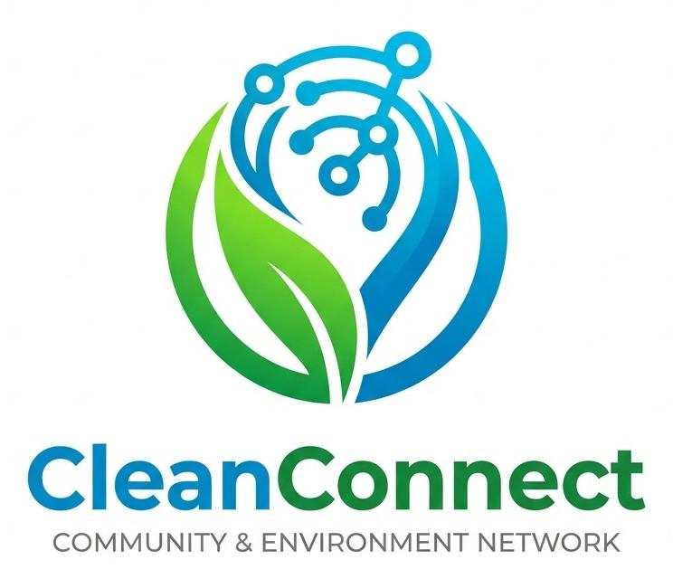
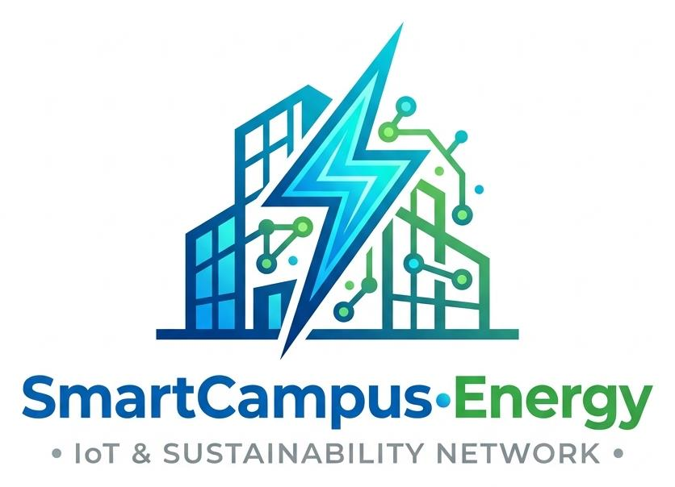

Python
Core programming, automation scripting, data processing, and microservice backends.

BCA student focused on becoming an AI Engineer — building practical software, automating boring workflows, and solving real-world problems.
class AIEngineer:
def build(self):
skills = [
"Python",
"APIs",
"Automation",
"AI"
]
return "Build. Automate. Scale."01 / ABOUT
I'm Dilip Kumar Sharma, a BCA student and aspiring AI Engineer. I enjoy turning ideas into working software instead of only learning theory.
My current focus is Python, APIs, backend development, AI concepts, automation, and data handling. I learn best by building projects and experimenting with real problems.
Long term, I want to build AI systems and automation solutions that create measurable value for businesses and users.
02 / SKILLS
Core programming, automation scripting, data processing, and microservice backends.
Asynchronous REST APIs, Uvicorn, SQLite WAL, JWT (HS256) RBAC, and Bcrypt security.
Google Gemini Vision, OpenCV, SSIM 75%+ proof verification, and perceptual hashing.
Vanilla HTML5, CSS3 glassmorphism, responsive UI/UX, and ES6+ JavaScript.
Vercel Edge CDN, Render Cloud Web Services, Resend API, and Linux (x86_64 / s390x).
Version control, automated GitHub Actions CI/CD workflows, and open-source collaboration.
03 / PROJECTS

Next-Gen AI Civic Cleanliness & Municipal Waste Intelligence
Production cloud-native platform connecting citizen hazard reporting, Google Gemini Vision waste classification, and municipal field collector dispatch.
🔗 Live Application: https://ecotrackaipwd-frontend.vercel.app/

IoT Telemetry & Sustainability Recommendation Architecture
Campus sustainability platform monitoring power consumption in real time with telemetry analytics, peak-load anomaly detection, and automated conservation strategies.
04 / JOURNEY
Strengthening C/C++ fundamentals, problem solving and web basics at ITM GIDA, Gorakhpur.
Architecting EcoTrack AI with Gemini Vision, OpenCV SSIM verification, FastAPI microservices, and zero-cost cloud deployment.
Building production-ready AI workflows and useful automation systems for real clients.
05 / CONTACT
I'm interested in AI projects, automation, web applications, hackathons and opportunities to learn by building.